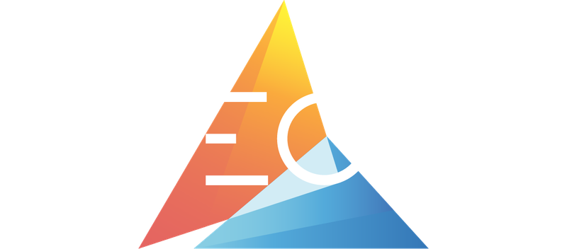
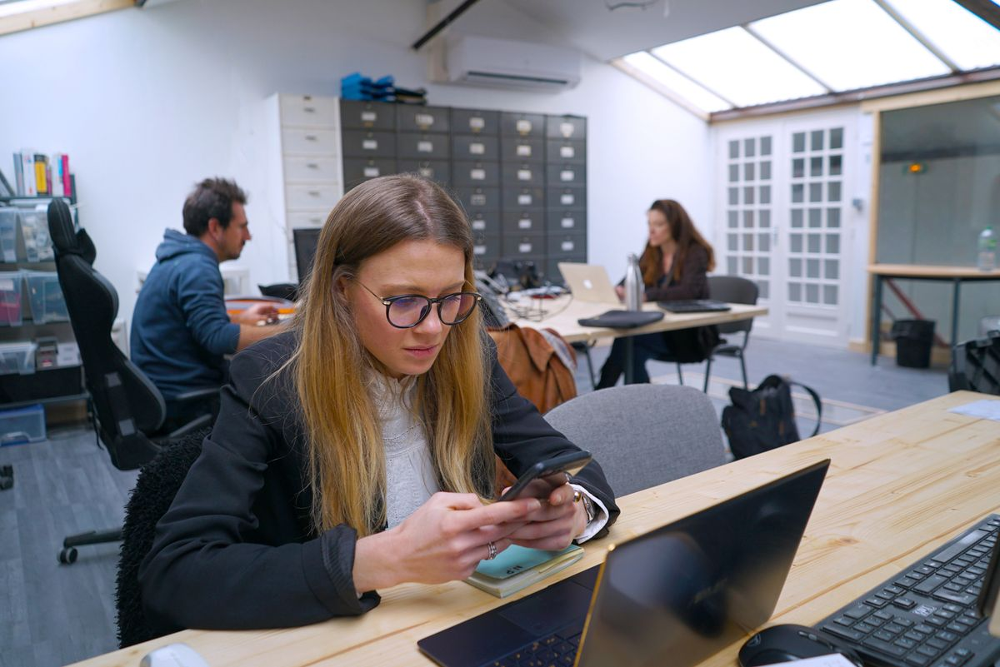

Théoriz
Un studio créatif concevant des expériences poétiques et non conventionnelles avec des technologies de pointe.
Voir le siteQui sommes-nous
LABLAB est un laboratoire artistique situé à Villeurbanne, au Pôle PIXEL, cœur des industries créatives de la métropole lyonnaise. Il réunit des artistes, ingénieur·e·s et petites entreprises indépendantes qui partagent espaces, outils et compétences, et proposent ensemble leurs services en production immersive, audiovisuelle et interactive. Découvrir les membres.
Le lieu favorise les échanges entre créateurs du cinéma, du jeu vidéo et des arts numériques, en mêlant les technologies aux interrogations de demain.

Un studio créatif concevant des expériences poétiques et non conventionnelles avec des technologies de pointe.
Voir le site
Née à Lyon en 2004, l’AADN porte un projet artistique, culturel et politique qui s’incarne dans les rencontres entre arts, sciences et technologies. Actrice de la société civile et entrepreneur culturel, l’AADN se situe dans le champ des innovations sociales, technologiques et artistiques.
Voir le siteEnsemble, Théoriz et l’AADN assurent la gestion quotidienne de LABLAB.

LABLAB accueille aussi des projets extérieurs, en fabrication ou en tournage, porteurs d’enjeux de recherche artistique, scientifique ou technologique, à travers des résidences, du co-design, des formations, des ateliers ou des démonstrations.
Un labo pour dompter les technologies et explorer leurs usages.
Inventer de nouvelles expériences audiovisuelles.
Un tiers-lieu pour la scène régionale, qui met en commun outils et compétences.
Un lieu collectif fondé sur l’échange et l’entraide.

Rencontrez-nous
Neuf entreprises et artistes travaillent au LABLAB : un studio de création, une association d’arts numériques, une société de tracking, une société de production audiovisuelle, une compagnie de danse, un électromécanicien, un artiste numérique, une ingénieure culture et données et un luthier créatif. Chacun peut être sollicité directement, ou avec d’autres membres pour des projets plus ambitieux.
Découvrir les membres